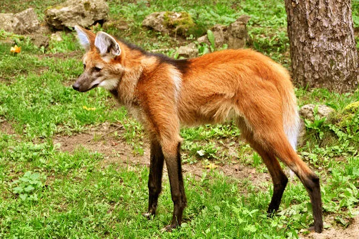

CACHORRO
| ESPECIES | LOCAL | DIETA |
|---|---|---|
|
CACHORRO |
EM TODOS OS CONTINENTES | CARNIVORO |
O cão (nome científico: Canis lupus familiaris), no Brasil também chamado de cachorro, é um mamífero carnívoro da família
dos canídeos, subespécie do lobo, e talvez o mais antigo animal domesticado pelo ser humano. Teorias postulam que surgiu do
lobo cinzento no continente asiático há mais de 100 000 anos. Ao longo dos séculos, através da domesticação, o ser humano
realizou uma seleção artificial dos cães por suas aptidões, características físicas ou tipos de comportamento. O resultado foi
uma grande diversidade de raças caninas, as quais variam em pelagem e tamanho dentro de suas próprias raças, atualmente
classificadas em diferentes grupos ou categorias. As designações vira-lata (no Brasil) ou rafeiro (em Portugal) são dadas aos
cães sem raça definida ou mestiços descendentes.
Com expectativa de vida que varia entre dez e vinte anos, o cão é um animal social que, na maioria das vezes, aceita o seu dono
como o "chefe da matilha" e possui várias características que o tornam de grande utilidade para o homem. Possui excelente
olfato e audição, é bom caçador e corredor vigoroso, relativamente dócil e leal, inteligente e com boa capacidade de aprendizagem.
Deste modo, o cão pode ser adestrado para executar um grande número de tarefas úteis, como um cão de caça, de guarda ou pastor de
rebanhos, por exemplo. Assim como o ser humano, também é vítima de doenças como o resfriado, a depressão e o mal de Alzheimer, bem
como das características do envelhecimento, como problemas de visão e audição, artrite e mudanças de humor.
A afeição e a companhia deste animal são alguns dos motivos da famosa frase: "O cão é o melhor amigo do homem", já que não há
registro de amizade tão forte e duradoura entre espécies distintas quanto a de humano e cão. Esta relação figura em filmes,
livros e revistas, que citam, inclusive, diferentes relatos reais de diferentes épocas e em várias nações. Entre os cães mais
famosos que viveram e marcaram sociedades estão Balto, Laika e Hachiko. Na mitologia, o Cérbero é dito um dos mais assustadores seres.
No cinema, Lassie é um dos mais difundidos nomes e, na animação, Pluto, Snoopy e Scooby-Doo há décadas fazem parte da infância de várias
gerações.
| ESPECIES | LOCAL | DIETA |
|---|---|---|
|
LOBO |
AMERICA DO NORTE/POLOS/EUROPA/ASIA | CARNIVORO |
O lobo (também chamado de lobo-cinzento; nome científico: Canis lupus) é uma espécie de mamífero canídeo do gênero Canis. É um
sobrevivente da Era do Gelo, originário do Pleistoceno Superior, cerca de 300 mil anos atrás. É o maior membro remanescente
selvagem da família canidae. O sequenciamento de DNA e estudos genéticos reafirmam que o lobo-cinzento é ancestral do cão
doméstico (Canis lupus familiaris), contudo alguns aspectos desta afirmação têm sido questionados recentemente. Uma série de
outras subespécies do lobo-cinzento foram identificadas, embora o número real de subespécies ainda esteja em discussão. Os
lobos-cinzentos são tipicamente predadores ápice nos ecossistemas que ocupam. Embora não sejam tão adaptáveis à presença
humana como geralmente ocorre com as demais espécies de canídeos, os lobos se desenvolveram em diversos ambientes, como
florestas temperadas, desertos, montanhas, tundras, taigas, campos e até mesmo em algumas áreas urbanas.O lobo-cinzento
(Canis lupus), o lobo-vermelho (Canis rufus), o lobo-etíope (Canis simensis) e o lobo-dourado (Canis anthus) são as únicas
quatro espécies classificadas como lobos. Os demais lobos correspondem a subespécies derivadas dessas quatro espécies.
| ESPECIES | LOCAL | DIETA |
|---|---|---|
|
 LOBO GUARA |
BRASIL | Onívoro e generalista, o lobo-guará se alimenta de praticamente qualquer item que seja capaz de engolir, de origem animal ou vegetal |
O lobo-guará (nome científico: Chrysocyon brachyurus), também chamado guará, aguará, aguaraçu, lobo-de-crina, lobo-de-juba e
lobo-vermelho, é uma espécie de canídeo endêmico da América do Sul. Suas marcas lembram as de uma raposa, mas não é uma raposa
nem um lobo. É a única espécie do gênero Chrysocyon e provavelmente, a espécie vivente mais próxima é o cachorro-vinagre
(Speothos venaticus). Ocorre em savanas e áreas abertas no centro do Brasil, Paraguai, Argentina e Bolívia, sendo um animal
típico do Cerrado. Foi extinto em parte de sua ocorrência ao sul, mas ainda deve ocorrer no Uruguai. No dia 29 de julho de
2020 o lobo-guará foi escolhido para simbolizar a cédula de duzentos reais.
É o maior canídeo da América do Sul, podendo atingir entre 20 e 30 quilos de peso e até 90 centímetros na altura da cernelha.
Suas pernas longas e finas e a densa pelagem avermelhada lhe conferem uma aparência inconfundível. O lobo-guará é adaptado aos
ambientes abertos das savanas sul-americanas, sendo um animal crepuscular e onívoro, com importante papel na dispersão de
sementes de frutos do cerrado, principalmente a lobeira (Solanum lycocarpum). Solitário, os territórios são divididos entre um
casal, que se encontra no período do estro da fêmea. Esses territórios são bastante amplos, podendo ter uma área de até 123 km².
A comunicação se dá principalmente através de marcação de cheiro, mas também ocorrem vocalizações semelhantes a latidos. A gestação dura
até 65 dias, com os recém-nascidos de cor preta pesando entre 340 e 430 gramas.
Apesar de não ser considerado em perigo de extinção pela União Internacional para a Conservação da Natureza (UICN), todos os
países em que ele ocorre o classificam em algum grau de ameaça, apesar de não se saber a real situação das populações. Estima-se
que existam cerca de 23 mil animais na natureza, sendo um animal popular em todos os zoológicos. Está ameaçado principalmente
por causa da destruição do cerrado para ampliação da agricultura, atropelamentos, caça e doenças advindas dos cães domésticos.
No entanto, é adaptável e tolerante às alterações provocadas pelo ser humano. O lobo-guará ocorre atualmente em áreas de Mata
Atlântica já desmatadas, onde não ocorria originalmente.
Algumas comunidades carregam superstições sobre o lobo-guará e podem até nutrir certa aversão ao animal. Mas em geral o
lobo-guará provoca simpatia em humanos e por isso é usado como espécie bandeira na conservação do Cerrado.
| OUTROS ESTUDOS |
 REPTEIS |
 FELINOS |
|
|---|---|---|---|